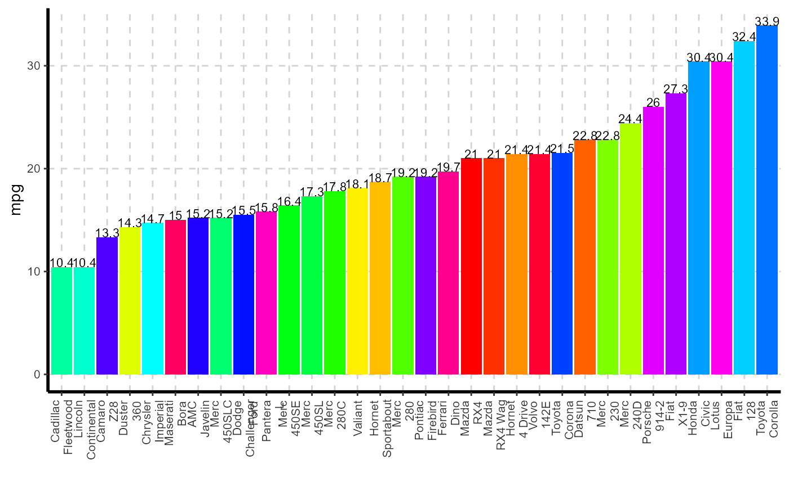
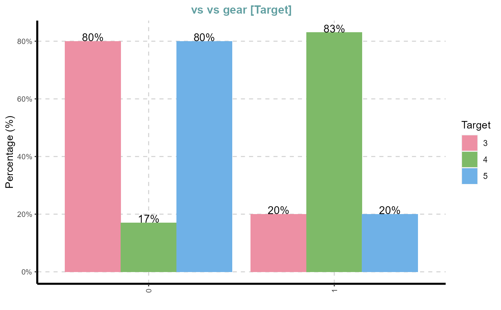
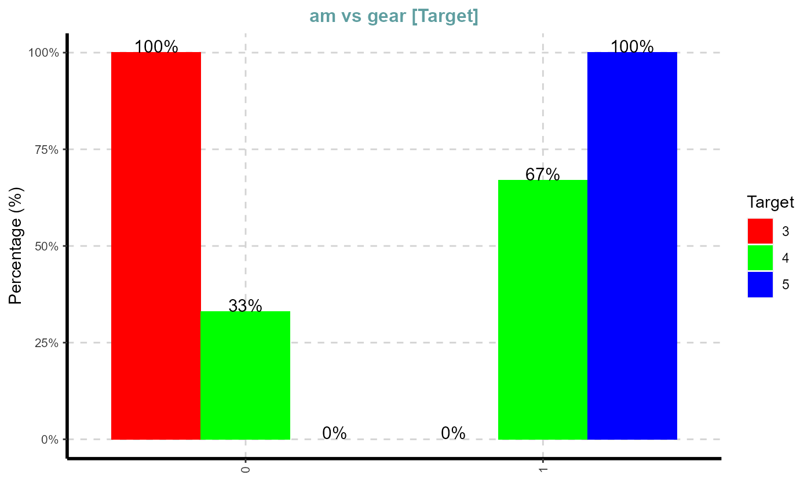
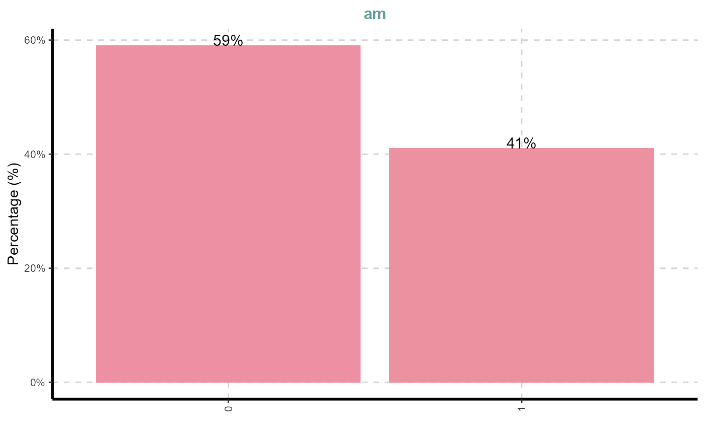
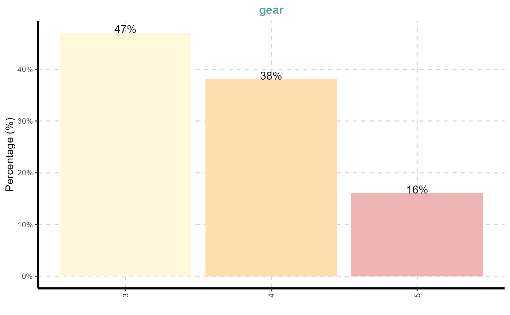
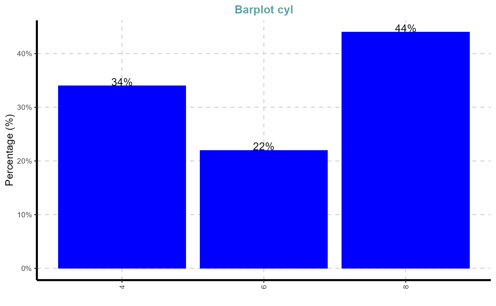
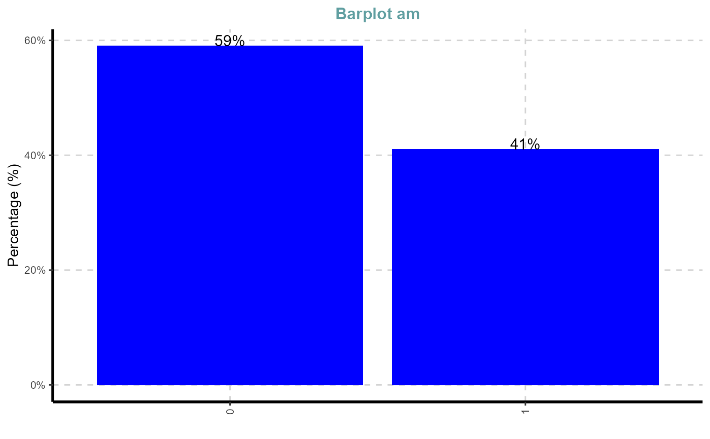

This function automatically scans through each variable and creates bar plot for categorical variable.
ExpCatViz( data, target = NULL, fname = NULL, clim = 10, col = NULL, margin = 1, Page = NULL, Flip = F, sample = NULL, rdata = FALSE, value = NULL, gtitle = NULL, theme = "Default" )
Arguments
| data | dataframe or matrix |
|---|---|
| target | target variable. This is not a mandatory field |
| fname | output file name. Output will be generated in PDF format |
| clim | maximum categories to be considered to include in bar graphs |
| col | define the colors to fill the bars, default it will take sample colours |
| margin | index, 1 for row based proportions and 2 for column based proportions |
| Page | output pattern. if Page=c(3,2), It will generate 6 plots with 3 rows and 2 columns |
| Flip | default vertical bars. It will be used to flip the axis vertical to horizontal |
| sample | random selection of categorical variable |
| rdata | to plot bar graph for frequency/aggregated table |
| value | value coloumn name. This is mandatory if 'rdata' is TRUE |
| gtitle | graph title |
| theme | adding extra themes, geoms, and scales for 'ggplot2' (eg: themes options from ggthemes package) |
Value
This function returns collated graphs in grid format in PDF or JPEG format. All the files will be stored in the working directory
Bar graphfor raw data(this function will dynamically pick all the categorical variable and plot the bar chart)Bar graphfor aggregated dataBar graphis a Stacked Bar graph by target variable
See also
Examples
## Bar graph for specified variable mtdata = mtcars mtdata$carname = rownames(mtcars) ExpCatViz(data=mtdata,target="carname",col="blue",rdata=TRUE,value="mpg")#> [[1]]#>n=nrow(mtdata) ExpCatViz(data=mtdata,target="carname",col=rainbow(n),rdata=TRUE,value="mpg") ## Ranibow colour#> [[1]]#>#> [[1]]#> #> [[2]]#> #> [[3]]#> #> [[4]]#>#> [[1]]#> #> [[2]]#> #> [[3]]#> #> [[4]]#># Bar chart ExpCatViz(data=mtdata)#> [[1]]#> #> [[2]]#> #> [[3]]#> #> [[4]]#> #> [[5]]#>ExpCatViz(data=mtdata,col="blue",gtitle = "Barplot")#> [[1]]#> #> [[2]]#> #> [[3]]#> #> [[4]]#> #> [[5]]#>